La T2
Volkswagen T2 · crema · techo elevable
Papel ideal: road movie, verano eterno, festival, surf.
Manías: cortinas escocesas, faros amarillos y cero prisa.
psst… ¿buscas algo con encanto?
Una furgo con techo que sube, un Mini descapotable, un Jeep Wrangler, un velero y dos áticos: uno en Madrid y otro en Sitges. Los llevamos a tu rodaje, sesión de fotos, anuncio o evento. Siempre con nuestro conductor o patrón, y con buen rollo.

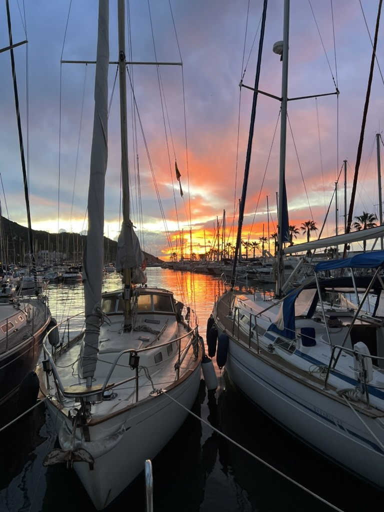
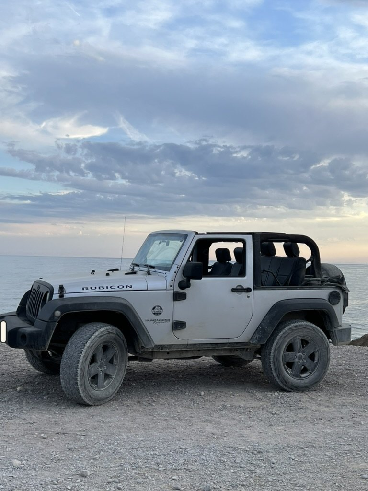
Seis personajes con mucha personalidad. Se reservan por jornada o media jornada, y se llevan genial entre ellos: si los quieres juntos, mira los combos.
Volkswagen T2 · crema · techo elevable
Papel ideal: road movie, verano eterno, festival, surf.
Manías: cortinas escocesas, faros amarillos y cero prisa.
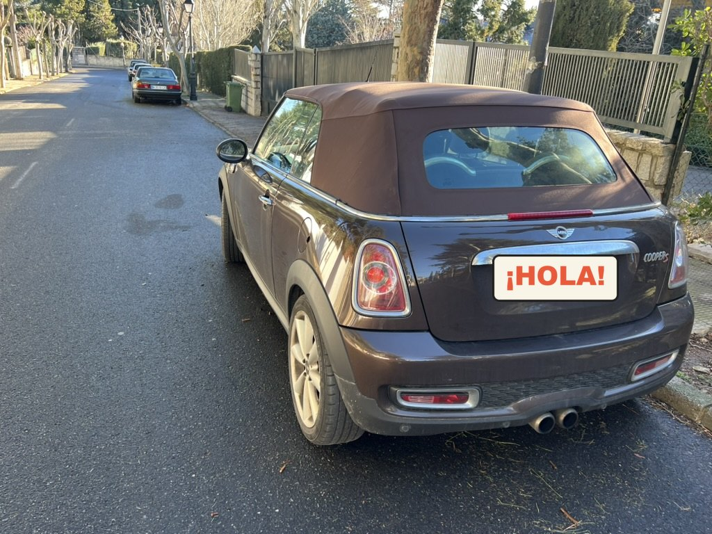
Mini Cooper S · cabrio · chocolate
Papel ideal: comedia romántica, moda, ciudad con capota bajada.
Manías: aparca en cualquier hueco y lo sabe.
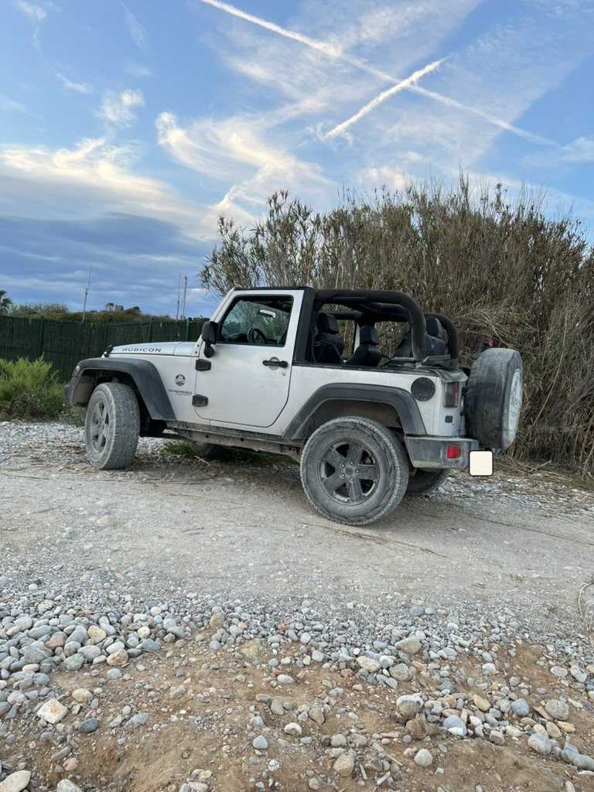
Jeep Wrangler Rubicon · blanco · techo abierto
Papel ideal: aventura, playa al atardecer, campaña outdoor.
Manías: le encanta el barro. Lo lavamos antes, prometido.
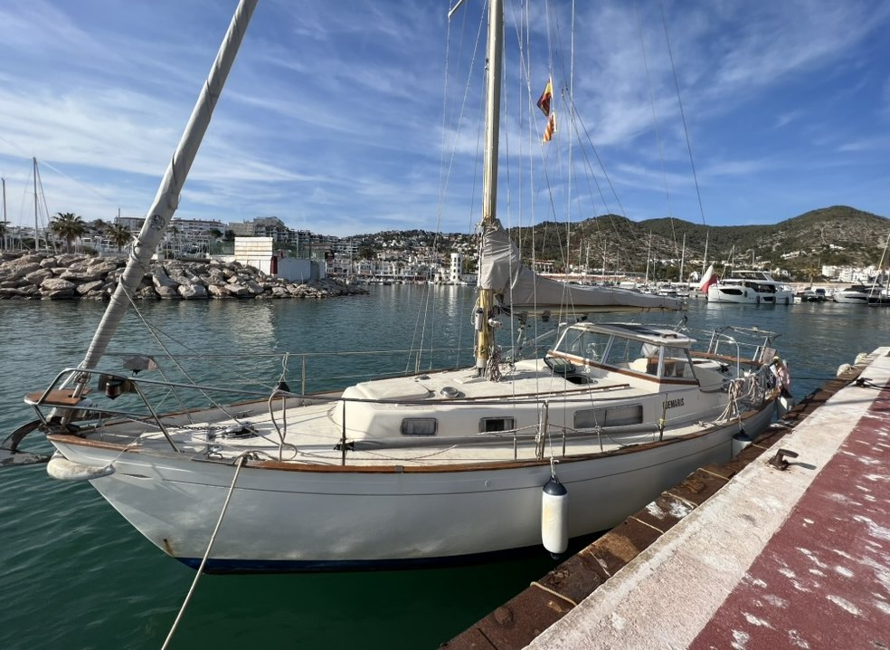
Velero clásico · madera y casco blanco · Puerto de Sitges
Papel ideal: moda de baño, videoclip, escena de amor en alta mar.
Manías: solo sale con su patrón. Es un caballero.

Madrid centro · a un paso de Gran Vía · terraza
Papel ideal: la casa del protagonista, entrevistas, cenas con skyline.
Manías: mira a la Telefónica todo el día. No se cansa.
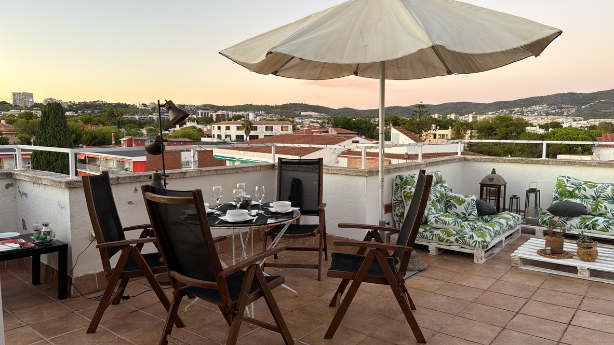
Sitges · terraza con montaña y mar
Papel ideal: cena de verano, sobremesa eterna, lifestyle mediterráneo.
Manías: atardeceres rosas. Todos los días, sin falta.
desde la terraza del ático…
La Telefónica de Gran Vía enfrente, tejados de Madrid delante. Cada hora y cada clima la pintan de otro color. Elige tu escena.
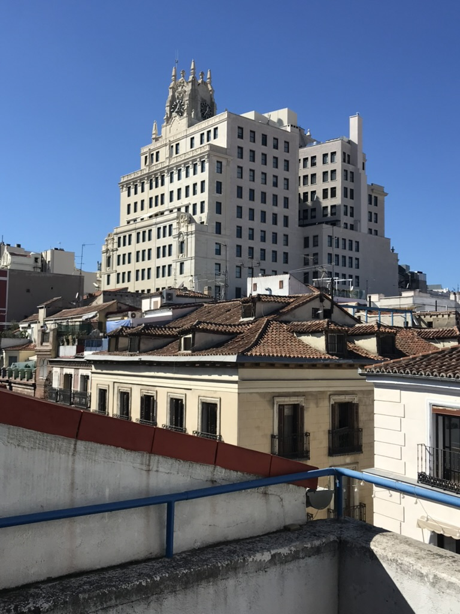
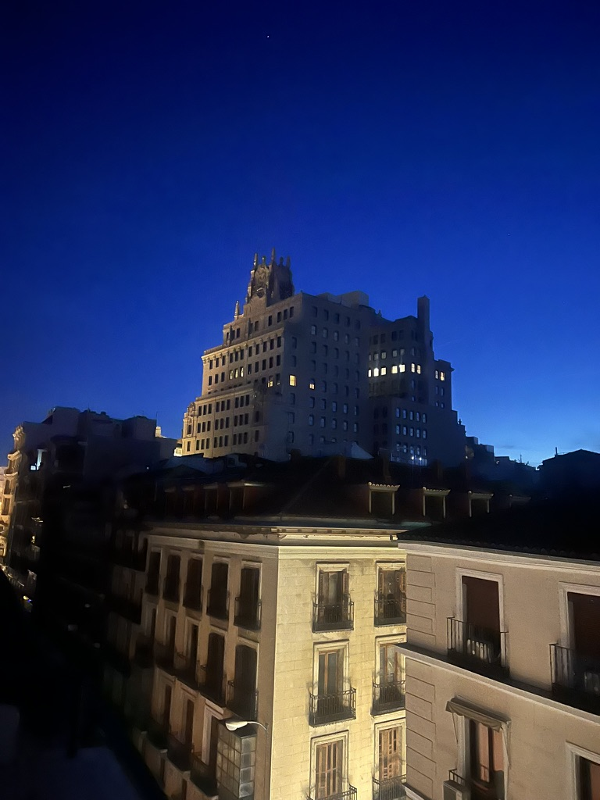
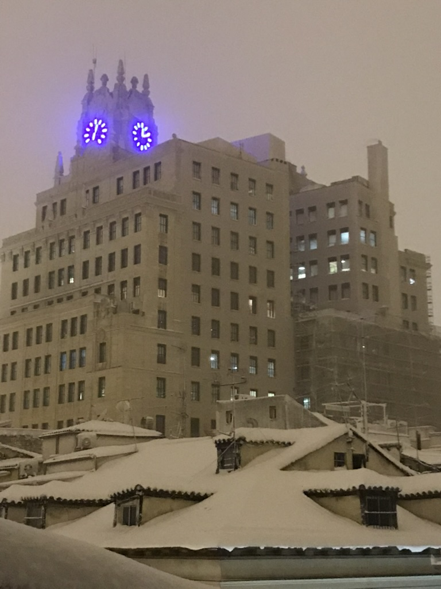
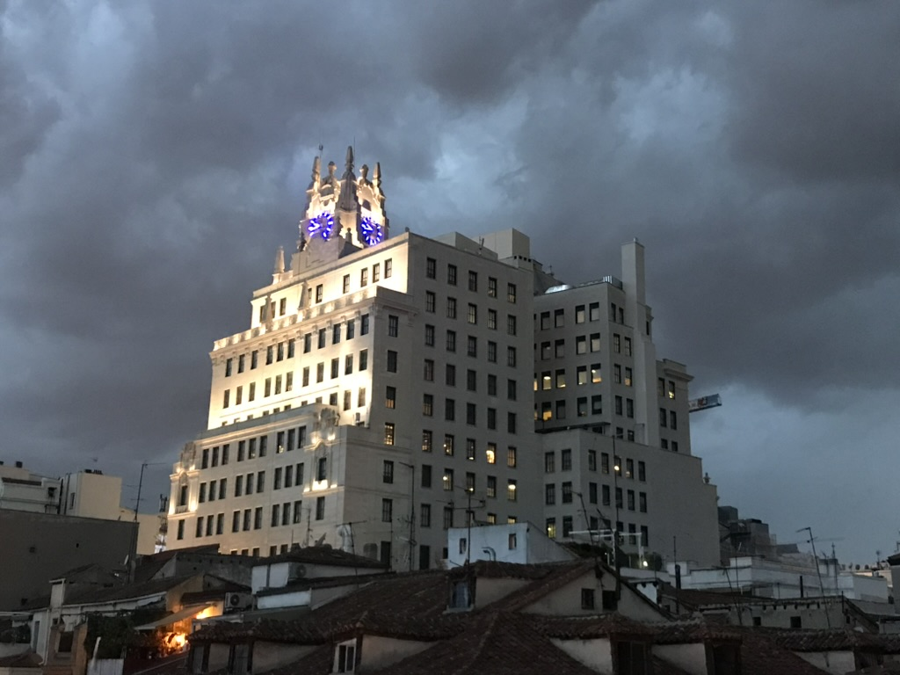
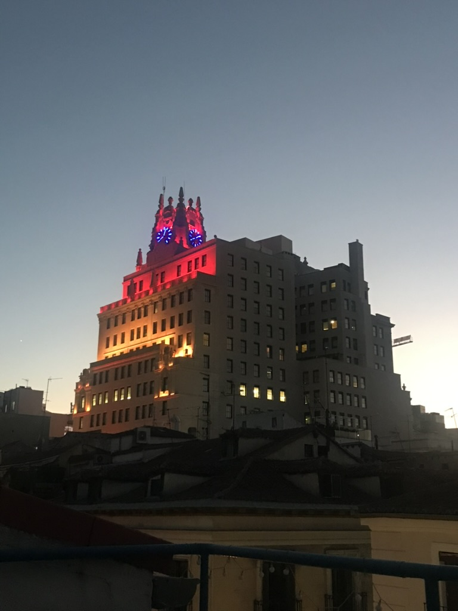
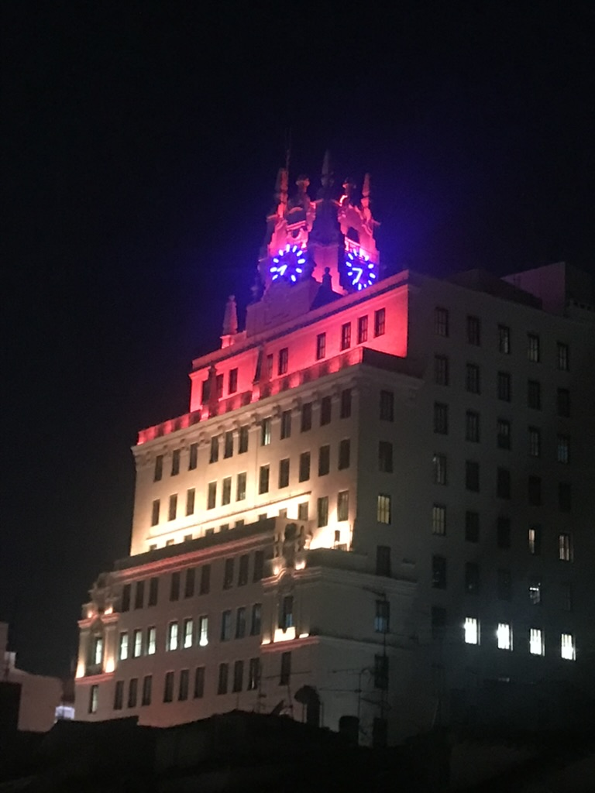
¿Cuál es la tuya?
Dinos la escena y te decimos a qué hora asomarte.
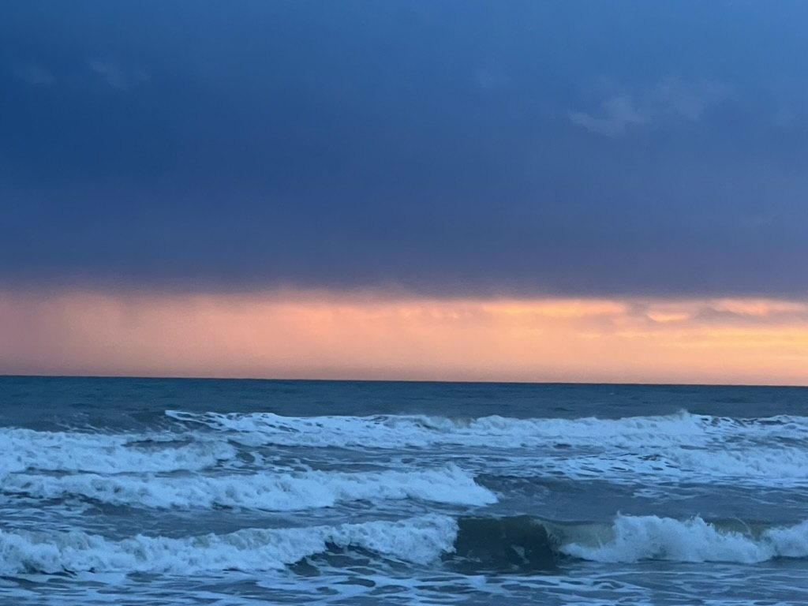
La T2 + El Velero
La T2 en el puerto y el velero saliendo a navegar. Campaña de verano resuelta en un día.
El Mini + El Ático
El Mini por el centro y la escena final en la terraza del ático, con la ciudad detrás.
El Jeep + La T2
El Jeep abre camino y la T2 pone la acampada. Para road trips, festivales y libertad.
El Velero + Ático de Sitges
Mañana navegando, tarde en la terraza con el cielo rosa. Una campaña entera sin mover el camión.
Dos o más juntos salen más a cuenta. Pregúntanos.
(las que todo el mundo pregunta)
Normalmente conduce nuestro conductor. Si el plano lo pide y la calle está cortada, hablamos y ampliamos el seguro.
No: no somos un rent a car ni hacemos traslados. Nuestros vehículos y el velero solo salen para rodajes, sesiones de fotos y eventos, y siempre con nuestro conductor o patrón.
El velero sale siempre con su patrón titulado. Hasta 5 personas a bordo, y se rueda desde el puerto de Sitges.
Tú traes el seguro de RC de rodaje; nosotros, el del vehículo. Hay una fianza que vuelve a tu cuenta al terminar.
Humo, fuego de verdad y fiestas multitudinarias. Los vecinos son majos; queremos que sigan siéndolo. Y no son alojamiento: aquí se rueda, no se duerme.
¡Claro! El desplazamiento va incluido en el presupuesto. La T2 adora la costa.
Te contestamos enseguida con un presupuesto a medida. Sin letra pequeña, palabra de furgo.